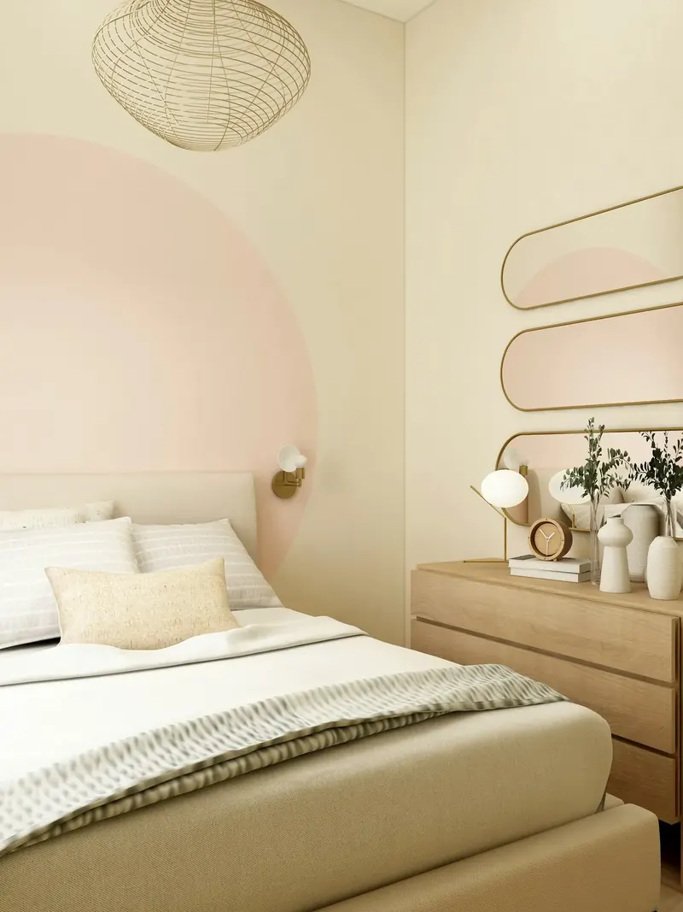
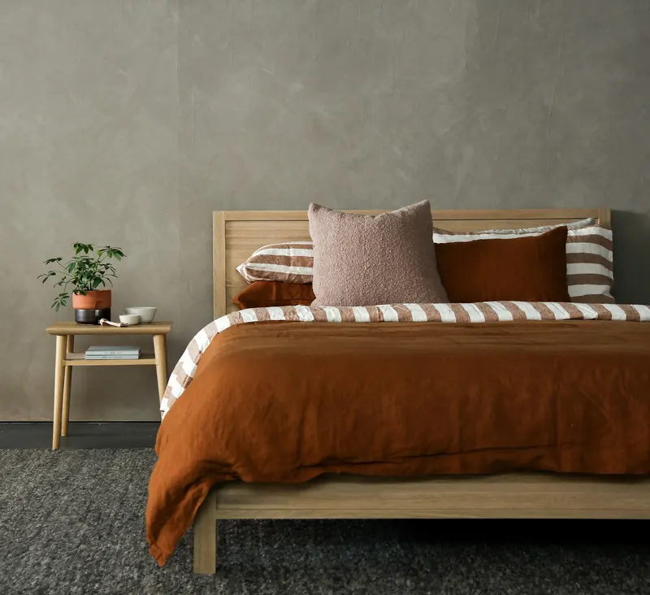
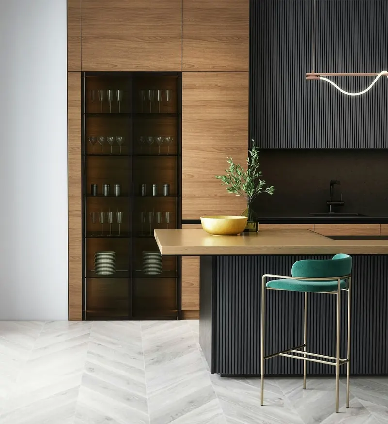

Projects · 04 · Hospitality
Guest rooms inKampot
- Type
- Hospitality
- Where
- Kampot
- Size
- Eight rooms in a family guesthouse
- Scope
- Colour, furniture, linen and lighting, room by room
- Status
- Invented for this concept site

The brief
A family guesthouse near the river wanted to refit its rooms between two rainy seasons without closing for long. New paint, new beds and linen, and lamps people can read by.
What we changed
- Each room in its own soft lime colour, mixed on site with the painters.
- Beds, side tables and luggage benches made by a workshop in town.
- Covers and curtains in local cotton, easy to wash and quick to dry.
- Worked floor by floor, so half the rooms stayed open the whole time.
Studio team: Founder and lead designer, furniture and sourcing lead, site coordinator. No client names, on this site or any other.

Materials
- Lime plaster
- Local cotton and silk
- Reclaimed hardwood
- Rattan and woven palm
See them all in the materials library, or come and touch the samples at the studio.
Next project
Coffee room in BKK1